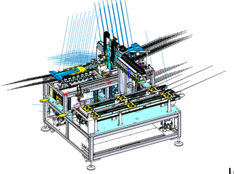
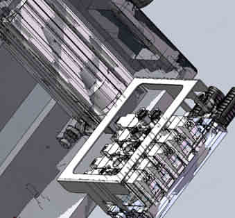
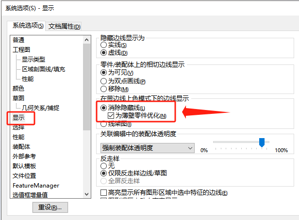

显示问题和异常
异常线条
奇怪异常的蓝色放射线，像刺猬
方法
透明黑框
装配体模式界面显示很多黑色轮廓线。（即使显示是“带边线上色”的模式）零件出现透明黑框
方法1
【系统选项-显示-未薄壁零件优化】勾选。
方法2
选项-系统选项-显示/选择-在带边线上色模式下显示边线（点亮消除隐藏线）
上色模式但显示线框
上色模式但显示线框

方法1
取消勾选【系统选项-显示-为薄壁零件优化】

方法2
如果当前显卡和驱动有异常，可以通过取消勾选“增强的图形性能”选项解决。

方法3：待确认
该问题是 NIVIDIA GPU 驱动程序已知问题，从 530.xx 开始，在 535.xx 中修复。
透明度无效
在装配体零部件设置“透明度显示”后，模型还是实体上色的样子，而不是透明的。
方法：取消上层外观
检查该装配体的上层文件是否被设置了外观上色（如下图）。该情况下会以顶层的装配体外观为主覆盖零部件的显示，即透明度显示也会被外观覆盖。